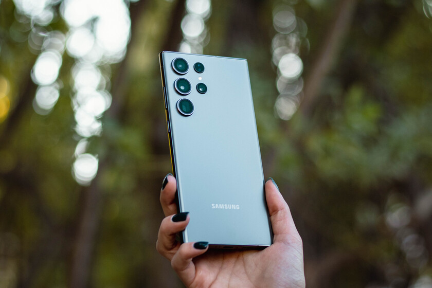

El mejor SmartPhone Android 2023: Samsung Galaxy S23 Ultra
El Samsung Galaxy S23 Ultra sorprende con sus características fotográficas y audiovisuales. Su gran calidad se debe a la novedosa tecnología de motor con reconocimiento de objetos de Inteligencia Artificial, que junto con el sensor dual pixel AF logra una gran profundidad en las imágenes, además de un sonido estéreo en tus grabaciones.

Vas a poder escribir en el Galaxy S23 y su pantalla de la forma que te sea más cómoda, ya que, además del sistema táctil, trae incorporado un S Pen.Este lápiz permite convertir los textos redactados a mano a digital o hacer co-creaciones de escrito en el momento.
El Samsung Galaxy S23 Ultra se destaca por su poderoso procesador Snapdragon 8 Gen 2 y su batería de 5.000 mAh de capacidad.
Una garantía para poder disfrutar por horas sin interrupciones. Además, su cargador súper rápido te permitirá volver a usarlo sin límites en pocos minutos.